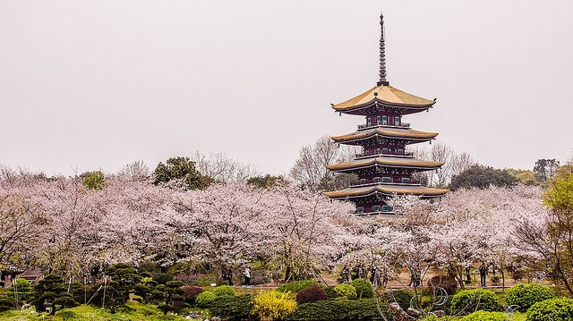
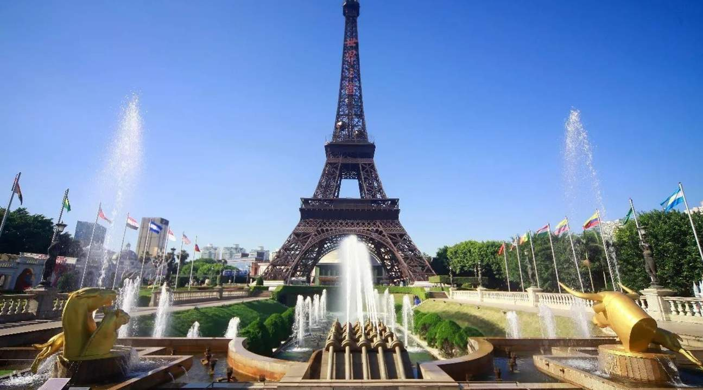

故宮博物院（Forbidden City / Palace Museum）
故宮博物院位於北京市中心，是明清兩代的皇家宮殿，建於1420年，已有600多年歷史。宮殿佔地約72萬平方米，由近千棟建築組成，展示中國古代建築藝術的精華。館內收藏了大量珍貴文物，包括書畫、瓷器、玉器和宮廷用具，是研究中國歷史、文化和藝術的重要場所。遊客可沿中軸線參觀太和殿、乾清宮等宏偉建築，感受皇家威嚴與古代宮廷生活。故宮不僅是世界文化遺產，也是中國文化象徵之一，每年吸引數百萬國內外遊客。

武漢東湖櫻園（Wuhan East Lake Cherry Blossom Park）
武漢東湖櫻園位於湖北省武漢市東湖風景區內，是中國著名的賞櫻勝地之一。每年三、四月，園內數千株櫻花次第綻放，粉色花海映襯湖光山色，景色如詩如畫。櫻園內設有步道、觀景平台與休憩區，遊客可漫步湖邊小徑、拍照留念，享受春日浪漫氛圍。賞櫻期間還會舉辦櫻花節，融合音樂表演、文化活動與美食，增添遊園樂趣。東湖櫻園不僅是觀賞櫻花的絕佳去處，也展現了武漢春天的自然之美與文化魅力。
萬里長城（Great Wall of China）
萬里長城橫跨中國北部，是世界上最長的人造建築之一，全長超過2萬公里。最著名的段落位於北京附近，如八達嶺、慕田峪。長城始建於戰國時期，明朝時期修築最為完善，主要用於防禦外敵入侵。長城蜿蜒於群山之間，氣勢雄偉，是古代軍事工程的奇蹟。遊客可以沿著修復段落健行，欣賞壯麗山景和歷史建築，體驗歷史厚重感。萬里長城於1987年被列入世界文化遺產，是中華民族智慧與毅力的象徵。

上海迪士尼樂園（Shanghai Disneyland）
上海迪士尼樂園位於上海浦東，是中國大陸首座迪士尼主題樂園，自2016年開幕以來深受遊客喜愛。樂園融合迪士尼經典角色與中國文化特色，共有七大主題園區，包括米奇大街、奇幻世界和明日世界。遊客可以體驗刺激遊樂設施、觀賞精彩表演和花車遊行，並享受豐富的餐飲與購物選擇。樂園設計注重細節與沉浸式體驗，適合家庭、親子及迪士尼愛好者。上海迪士尼不僅是娛樂勝地，也象徵上海現代化城市魅力與國際化形象。

世界之窗（Window of the World）
世界之窗位於深圳，是一座大型主題公園，展示世界各地著名建築和文化景觀的縮影。園內有百餘座仿真景點，如埃菲爾鐵塔、比薩斜塔、金字塔和泰姬陵等，讓遊客不出國也能「環遊世界」。公園設計兼具娛樂與教育功能，還有表演舞台、游樂設施和特色美食。遊客可以拍照留念、參加文化活動，體驗不同國家的建築風格和文化魅力。世界之窗是深圳知名旅遊景點之一，融合文化、娛樂與休閒，適合全家遊玩與短途旅行。